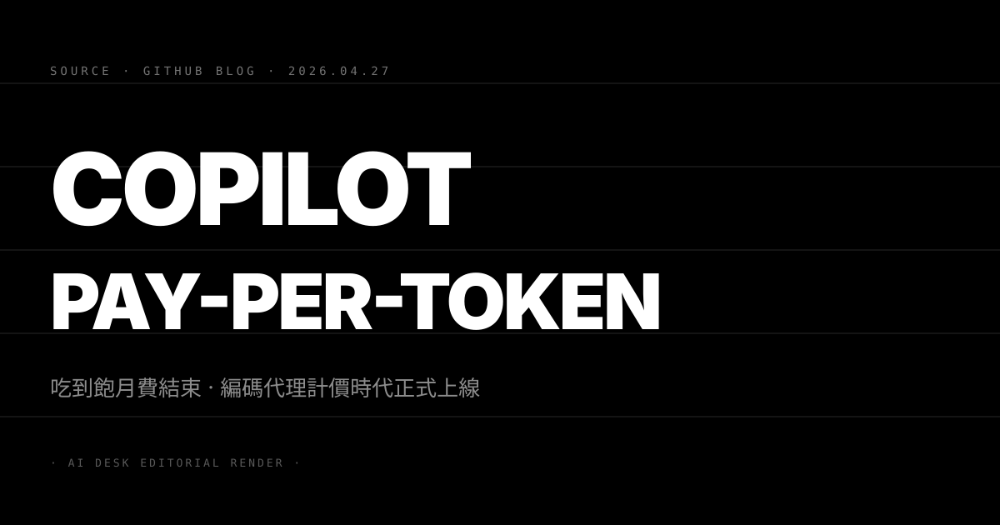

N°01 序章 · 為什麼這條新聞不是「漲價」而是「重設」

Pin · 表面是改價，本質是 AI Coding Agent 商業模式從 SaaS 進化到雲端計量的分水嶺。
2026 年 4 月 27 日，GitHub 在官方部落格公告：Copilot 將從吃到飽月費（個人 $10、商業 $19）轉為 token-based 用量計費。新方案保留小額月費（含基礎額度），超出後按使用量計價，agentic mode 與多步驟 workflow 視為高權重消費。HN 衝上 439 分、514 則留言，社群兩極分裂——有人罵漲價、有人說早該如此。
新聞表層是漲價／降價的數字戰，但這條故事真正的份量不在帳單。它告訴行業一件事：過去三年「AI Coding Tools 是 SaaS 訂閱」這個假設，已經支撐不住。當 Copilot、Cursor、Windsurf、Cognition 全部被推向 agent 多步驟工作流，每個用戶背後消耗的算力差距是十倍、百倍級。靠固定月費補貼重度用戶，是擺在 P&L 上的明牌負債。GitHub 是第一個在 frontier 賽道公開承認這件事的玩家。
本文用六個視角拆解：成本結構為什麼撐不住、競爭格局如何被重排、企業採購邏輯被換了什麼、開發者體感與工作流被推往哪、為什麼仍有合理的反方觀點、以及對 Rick 社群讀者的實際操作建議。
N°02 成本結構拆解 · 為什麼吃到飽撐不住
Pin · 不是模型變貴，是工作流變長。
autocomplete 時代的單位經濟
2021 至 2023 年的 Copilot 是純 autocomplete。每次補全請求大約 1K 至 3K input tokens、輸出 100 至 500 tokens。即使 GPT-3.5 級別模型，每次互動成本以美分計。$10 月費對應的算力消耗是被精算過的：一個 active developer 一天約 200 至 500 次補全，月度 token 消耗在百萬級。對應雲端成本約 $1 至 $3，毛利率 70% 以上。
agentic 時代的單位經濟
2024 年中之後 Copilot 加入 chat、workspace、agent mode、PR review。每一條都把 token 消耗推上一個量級：
- Chat 模式：一次互動 5K 至 20K tokens（含 context 注入）
- Workspace 模式：一次任務 50K 至 200K tokens（多檔案 retrieval）
- Agent mode：一次 run 動輒 200K 至 2M tokens（多步驟、tool use、self-correction loop）
- PR review agent：每個 PR 100K 至 500K tokens
底層模型也從 GPT-3.5 級別漲到 GPT-4 / Claude 4 / GPT-5 級別，input 與 output 單價都翻倍以上。重度用戶一天可以跑 30 至 100 個 agent run，月度 token 消耗從百萬跳到數十億。對應雲端成本飆到 $200 至 $1500，遠超 $19 商業版月費。GitHub 的 P&L 上，每多一個重度 agent 用戶就多一份赤字。
補貼結構的崩解
SaaS 月費模型靠「輕度用戶補貼重度用戶」運作。但 AI Coding Agent 的使用分佈高度不對稱：少於 10% 的重度用戶消耗 70% 以上的 token。在 GPU 短缺的市場條件下，這種補貼結構代表 GitHub 必須限速、限額、排隊——而這每一條都直接傷害產品體驗。改 token 計價是把成本訊號傳回用戶，讓重度用戶自己決定「值不值得」。
數字推算 · 重度用戶月費上限
假設 GitHub 用戶平均 token 單價 $5 / 1M（混合 prompt + completion + cache，含毛利），重度用戶一天 50 個 agent run、每個 run 平均 800K tokens：日消耗 40M tokens、月消耗 1.2B tokens、月成本 $6,000。即使重度用戶只有 5% 也是個天文數字。新計價之後，這 5% 用戶會被推向「自願降載」或「企業合約轉型」，公司平均單位經濟學能恢復到正毛利區間。
N°03 競爭動態 · Cursor、Windsurf、JetBrains 全部被迫跟
Pin · GitHub 是第一張倒下的骨牌。下一張在哪？答案不只一個。
Cursor · 已部分採用量制
Cursor 過去 12 個月已逐步把高階模型（Claude 4 Sonnet、GPT-5）切到量制——免費額度耗盡後按 token 計價。GitHub 跟進等於行業共識成形。Cursor 接下來預期會做的事：把 agent mode 與 background agent 的計費權重再上調、推出企業 multi-tenant 套餐、加大 token cache 與 prompt compression 投資以拉開單位經濟差距。
Windsurf · Codeium 主品牌的兩難
Windsurf（前身 Codeium）是過去 24 個月發展最快的後進者，主打 Cascade agent 與 inline AI 的整合體驗。Codeium 一向以「個人免費」為主要 acquisition 槓桿。GitHub 改價讓 Windsurf 進退兩難——跟進量制等於拋棄差異化，不跟則繼續燒投資人的錢。最可能的折衷是「保留個人免費的 autocomplete + agent 改量制」，類似 Cursor 已經跑的雙軌結構。
JetBrains AI Assistant · 老牌 IDE 的算盤
JetBrains 的 AI 產品線過去兩年一直是價格保守派——固定月費、含在 IDE 訂閱包裡。GitHub 改價對 JetBrains 構成兩種壓力：第一，自家 AI Assistant 的成本曲線跟 Copilot 沒有本質差異，現在被迫評估是否同步轉量制；第二，IntelliJ / PyCharm 訂閱本身的「AI 含在內」承諾被市場重新定價，不轉量制就要漲價（已經試過一輪用戶反彈）、轉量制則打破訂閱包邏輯。預期 JetBrains 會在 2026 下半年推一條新訂閱層，把 AI Assistant 的高階能力獨立出來計量。
Cognition Devin · 從第一天就是量制
Cognition 的 Devin 從上市起就是高單價、按 task 計費的產品，因此這波對它幾乎沒有衝擊——反而是利多。當行業全面轉向量制，Devin 的「我們從第一天就誠實計價」敘事，會變成 enterprise sales pitch 的核心論點。Cognition 估值的下一輪故事，會圍繞「企業級 agent 採購標準制定者」展開。
Replit Agent、Anthropic Claude Code、Codex CLI
Replit 與 Anthropic 的 Claude Code 已是量制（Anthropic 一向用 token 計價）。這波對它們是利多——市場被教育成接受量制之後，他們的客戶獲取成本會降。OpenAI 的 Codex CLI 仍綁在 ChatGPT 訂閱裡，預期會在 6 至 12 個月內切出獨立計量層。
N°04 企業採購衝擊 · RFP 與資訊安全部門的新戰場
Pin · 改價不只動 Devx，動到 CFO 的預算審核流程。
採購邏輯的根本變動
過去三年企業採購 Copilot 的邏輯是「每個工程師席次 $19，800 人就是 $182K 年費」。這條算式簡單、可預測、可預算。改量制之後變成「我們公司一年用多少 token？」——這是個沒人能回答的問題。CFO、CTO、CIO 三個 office 的對話結構整盤重來。
RFP 評分模板會被換
新一輪 RFP 會問六個之前沒問過的問題：
- token 計費的單價、計算口徑（是否含 cache、是否含 thinking tokens）
- 企業統一 quota 還是個人 quota？超量處理機制？
- 使用儀表板（觀察單位團隊、單位開發者的 token 消耗）
- 跨模型切換（自動降級、自動升級的策略）
- 企業合約折扣與 commit-based pricing
- 稽核日誌（哪些 agent run 動了哪些 repo / data，符合 SOC2、ISO 27001）
這六條每一條都是供應商的差異化競爭點。GitHub 既有的 enterprise contract 板模也要重寫，這是 Microsoft sales 接下來 6 個月最重的工作。
資訊安全的新風險面
量制計費同時暴露兩個新風險。第一，prompt injection 攻擊可能造成 token 消耗暴衝（攻擊者植入長 context 觸發大量 retrieval），等於 DDoS 但燒的是受害公司的錢。第二，內部威脅（rogue insider）可以故意跑高消耗 task 把企業 quota 燒掉。CISO 桌面會多兩條 control：「agent run 異常 token 消耗告警」與「人均 token 上限與審批工作流」。
對 Rick 社群讀者的實際操作建議
三條：
(1) 重度個人用戶現在就要做 token budget。用 GitHub 提供的儀表板抓兩週的基線，估算月度成本上限。如果月成本超過 $50，要評估是繼續用 Copilot、還是切到 Cursor 或 Claude Code，後兩者在重度 agent 場景的單位經濟可能更划算。
(2) 企業客戶不要急著續約。新方案上線初期供應商議價空間最大。把續約延後 2 至 3 個月，要求供應商提供至少 30 天的試用儀表板數據，再做正式採購決策。Microsoft sales 在這個窗口會給比平常多一檔的折扣。
(3) 對開發團隊主管：建立內部「token consciousness」文化。不是要省，是要讓開發者知道 agent 不是免費的。最簡單的做法是把月度 token 消耗放進團隊 Slack 每週通報，跟 PR merge 數量並列。Token 是新時代的 build minute。
N°05 反方觀點 · 為什麼這條路不一定是好事
Pin · 量制不是萬靈丹。它解掉一個問題，但同時打開三個新的。
反方一 · 思考摩擦回到開發者身上
SaaS 訂閱最大的優點是「無限制思考」——開發者不用算成本就敢隨手丟問題給 AI。量制計費把這層摩擦還回來。HN 討論串裡最常被提及的擔憂是：「我每按一次 Enter 都在燒錢，這會改變我問問題的方式。」研究上有大量證據顯示，當人意識到每次行動都有單位成本，會傾向少做、少試錯。對 AI 工具的核心承諾——「降低嘗試新事物的成本」——這是個結構性反向力。
反駁這個論點的人會說：基礎額度足以涵蓋 90% 用戶的日常使用，只有重度才需要付額外。這是事實，但忽略了「焦慮成本」——即使預算夠用，知道自己在計量的人會自動降載。這是行為經濟學裡的 mental accounting effect。GitHub 接下來的 UX 設計會被這個張力左右——是讓用戶看見每次 token 消耗（透明）、還是只看見月度總計（降焦慮）。
反方二 · 對小公司與獨立開發者不利
$10 / $19 月費的 SaaS 結構雖然壓榨重度用戶、補貼輕度用戶，但對「中度但無預算」的小團隊（5 至 20 人）很友善——預算是固定的、可預測的。轉量制之後，這個層級會被推向兩個方向：要嘛回到本地開源工具（Continue、Aider 自己跑模型）、要嘛接受財務不確定性（這個月可能 $200，下個月可能 $800）。獨立開發者社群與 indie hacker 會是受傷最大的一群。GitHub 過去用 Copilot 經營出的「平民開發者品牌」——這次改價是逆向動作。
反方三 · 評估 ROI 變得很難
SaaS 訂閱讓 ROI 衡量很簡單：每席次 $19、開發者每月省 5 小時 = 划算。轉量制之後，ROI 評估變成「我這個月燒了 $X，估算節省 Y 小時」——分子分母都浮動。CFO 看到的不是 OPEX 而是準 COGS。這條路對「AI 工具能不能說服 finance」會多增加一層阻力。
反方四 · 量制可能變成創新的天花板
Coding Agent 的下一個前沿是「長序列任務」——讓 agent 跑 3 小時、處理整個 repo migration、自動修復幾十個 issue。這些任務的 token 消耗動輒上億。量制計費讓這些任務的「敢不敢按下執行鍵」門檻很高。結果可能是：技術上能做、但因為計費焦慮沒人做。創新的速度被定價結構綁住。
所以呢
反方論點不是說量制錯——商業上量制是無可避免。是說量制不是中性的。GitHub、Cursor、Windsurf 接下來的差異化，會回到誰能把「降低計量焦慮」做到最好。可能的方向有：透明可預測的 token 預算、agentic 任務的事前成本估算、企業合約裡的 commit-based discount、開發者 dashboard 的 UX。能在這層贏的人，才會是 2027 年的勝者。
N°06 三年後回看 · 這條新聞會被當成什麼
Pin · 2029 年回看 2026/04/27，這天會被記住的不是改價，而是「Coding Agent 從 SaaS 變雲端」的官方分水嶺。
三年後回頭看 GitHub 這次改價，最可能的歷史定位有三條。第一，它是 AI Coding Tools 計費邏輯改朝換代的標誌——從 Notion-style flat fee 進到 AWS-style metered。第二，它是 enterprise AI 採購標準化的起點——RFP 會多六條、CISO 會多兩條 control、CFO 會多一張 dashboard。第三，它是行業差異化從「模型誰最強」轉到「成本透明度誰最強」的轉捩點——當所有家都用相似的前沿模型，誰能讓客戶安心預算才是贏家。
但歷史的另一面總是更有趣。三年後也可能回看，這次改價是 AI Coding 工具「平民化敘事」的高峰結束。$19 月費讓任何工程師、任何學生、任何 indie hacker 都能用上世界級工具。改量制讓這扇門半關上。下一輪「平民化敘事」要由誰承接？可能是本地開源（Aider、Continue 跑 Llama）、可能是某個破壞式定價的後進者、也可能是某家把推論成本壓到極限的硬體公司（Groq、Cerebras）。
這是給 2026 年中所有寫程式的人——以及所有靠寫程式工作的人——的訊號：定價結構即將進入一段不穩定期。三件事值得做。第一，把自己的 token 消耗實際量化，不要再憑感覺。第二，至少準備一條「不依賴單一供應商」的 fallback 方案。第三，在工作流程裡培養 token 意識，把它跟 build minute、CI cost 一起放進開發者的 dashboard。
編輯台會繼續追這條故事——下一個 milestone 是 Cursor、Windsurf、JetBrains 的對應動作。如果有任何家在 90 天內推出截然不同的對手方案（例如完全本地推論的訂閱模型），會是 News 深度的下一條。
· News 深度 · 不定期更新 · 下一篇預期追 Cursor / Windsurf / JetBrains 對應方案 ·